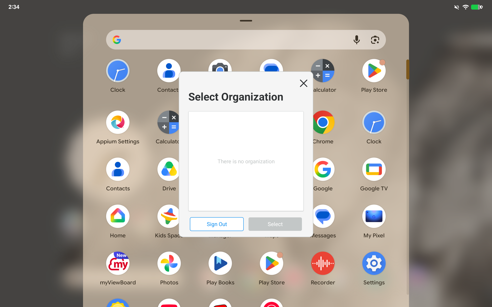
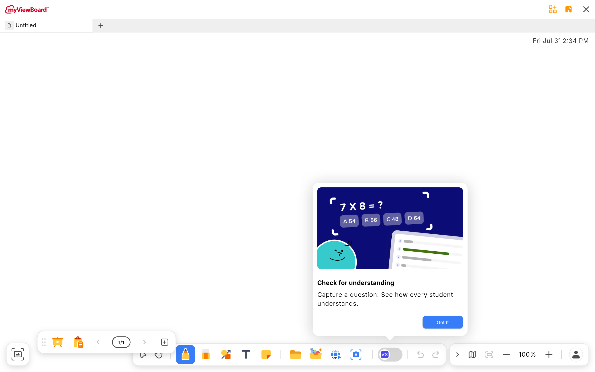
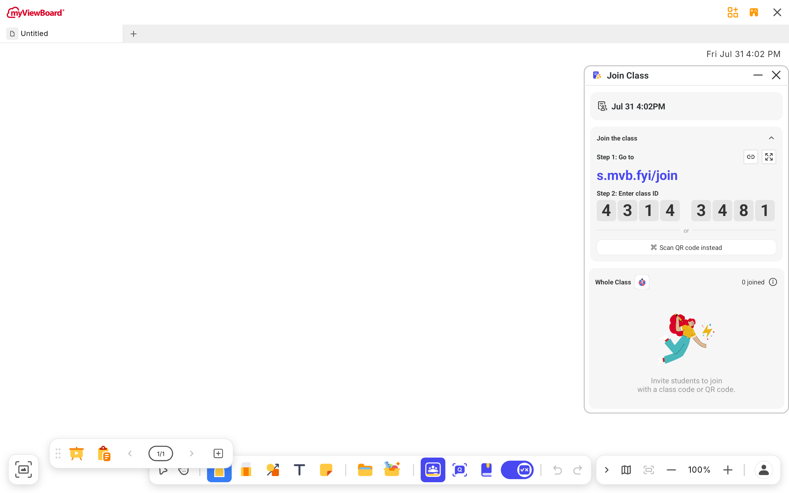

ClassSwift 融合 — findings（實作記錄）
1. 結果一句話
| 面向 | 結果 |
|---|---|
| 真機實跑 | CS 的 UI、overlay 視窗框架、後端登入、socket 連線全部在 com.viewsonic.droid process 內正常運作，MVB 自己的 Flutter 白板不受影響（Pixel Tablet, Android 16） |
| 使用者可見行為 | MVB 工具列 toggle 直接開出融合版 CS、無安裝畫面（§6.2） |
| mvbf 端改動 | 約 20 個檔案：既有檔案微調 + 1 個 wrapper module + 6 個融合膠水檔案 + flavor 隔離的 sourceSet 搬遷（清單見 §3） |
| ragdoll-cat 端改動 | 只需 4 檔的 quit seam（§6.3.1：AppExitHandler 抽象 + AccountManager 尾段委派 + Koin 註冊 + 契約測試），獨立 APK 行為不變。 這是必要改動 —— 融合版靠 Koin 覆寫此 interface 才能接管 quit，否則 End class 的 killProcess 會把 MVB 一起殺掉。其餘（含停用 CS 自我更新，§6.1）全部從 MVB 端達成 |
| 驗證範圍 | 真機驗證均為 debug + stag；release + rc/prod 僅驗證 build 成功，尚未上真機 |
1.1 決策記錄索引（為什麼要這樣做）
本文的 §6.3.x 依日期記錄完整演進過程；此表是「被問為什麼時」的快速入口 —— 每一條都是實測踩雷後的決定，不是憑空設計。
| 決策 | 為什麼（一句話） | 完整記錄 |
|---|---|---|
| 為什麼 ragdoll-cat 需要改動（quit seam 4 檔）？ | quitApp 尾段原本寫死 killProcess —— 融合後同 process，End class 會把 MVB
一起殺掉（真機踩雷）；可覆寫的 interface 只能由 CS 端開出，且全 codebase 殺 process 僅此一處，
seam 成本遠低於當初估計 |
§6.3、§6.3.1 |
| 為什麼要有 quit bridge（通知 MVB 端重置）？ | 獨立 APK 靠 process 死亡讓 binder 斷線、觸發 MVB 的 Bloc 重置；融合後 binder 永不斷， 不補訊號則第二次 toggle-on 什麼都開不出來（真機踩雷） | §6.3.2 |
| 為什麼 quit 時要 stopKoin 整鍋重建，而不是逐欄位 reset 或殺 process？ | 帳號切換實測抓到跨帳號殘留（standards 洩漏、selectedOrg 導向錯 org、logoutAndQuit 自殺迴圈）； 逐欄位 reset 清單會漂移（新欄位必漏），殺 process（獨立 :process）代價是 IPC 邊界 + manifest 手術 + WebView 新雷；重建實測僅 ~25ms 且與冷啟動同構 | §6.3.3、§6.3.4（含 A/B/C/D 方案比較與決策記錄） |
| 為什麼 Amplitude 要 carry-over、不隨容器重建？ | Amplitude SDK 每顆實例持有 3-4 個永不關閉的 executor，隨重建每輪洩 ~4 條執行緒 （8 輪實測 111→162）；carry-over 後持平 | §6.3.5 |
| 為什麼維持 process 啟動時 init CS 的 Koin，而不是 lazy init？ | initKoin 只註冊定義（實測含 stopKoin 整套 ~25ms），lazy 化反而要保證所有 CS 進入點 都先經過 init，漏一條就 crash | ClassSwiftFusionInitProvider KDoc |
| 為什麼 Firebase/RemoteConfig 暫不處理？ | RemoteConfig 現況零實質使用（唯一 key 無讀取者且屬於被移除的 OTA 流程）； Crashlytics/Analytics 歸屬是數據面產品決策，不影響行為 | §6.4 R7 |
2. 做法
核心手法：wrapper module + sourceSets 指向。在 mvbf 新增 android/classswift/
library module，所有 sourceSets（java/res/assets/aidl/proto/manifest）直接指向 ragdoll-cat 的原始碼目錄，
用 mvbf 的工具鏈（AGP 8.13.2 / Kotlin 2.1.0）編 CS 的程式碼（CS 原生是 AGP 8.8.2 / Kotlin 2.0.21，向後相容無礙）。
flowchart LR
subgraph MVBF["edu-droid-flutter（有改動）"]
APP[":app
implementation project(':classswift')"]
WRAP[":classswift wrapper module
com.android.library
namespace com.viewsonic.classswift"]
SETTINGS["settings.gradle
+ ksp / protobuf / safeargs plugins
+ cslibs version catalog"]
end
subgraph CS["ragdoll-cat（原始碼留在自己的 repo）"]
SRC["app/src/main/*
java / res / assets / aidl / proto / manifest"]
TOML["gradle/libs.versions.toml"]
KEYS["keystore.properties
version.properties"]
end
WRAP -->|"sourceSets 指向"| SRC
SETTINGS -->|"versionCatalogs from(files(...))"| TOML
WRAP -->|"讀取烘入 BuildConfig"| KEYS
APP --> WRAP
cslibs）自動同步 —— 零漂移與 CS 原生 build 的差異：不套 CS 的 gradle flavors —— environment 於 build 時依 MVB
release target 推導（stage→stag / beta→rc / production·rollback→prod，-PcsEnv= 可覆寫），
以 buildConfigField 烘入，並手動補 library 不自動生成的 FLAVOR / VERSION_NAME /
VERSION_CODE；跳過 google-services / crashlytics / perf 這些 app-level plugins
（由 MVB app 自己的接管）；不接 test sourceSets。CS 的 proguard 規則已透過
consumerProguardFiles 帶入（見 §6.4 R6）。
3. 改動清單
| 檔案 | 改動 |
|---|---|
android/classswift/build.gradle | 新增 wrapper module（~180 行，含全部 buildConfigField 與依賴清單） |
android/settings.gradle | + ksp 2.1.0-1.0.29 / protobuf 0.9.5 / safeargs 2.8.9 plugins；+ cslibs catalog；+ include ':classswift' |
android/app/build.gradle | + implementation project(':classswift')（目前全 flavor 帶 CS；生產要改 ifpImplementation/edlaImplementation，見 R5） |
android/app/src/main/AndroidManifest.xml | application 加 tools:replace="android:name,label,icon,roundIcon,resizeableActivity,networkSecurityConfig" |
…/p2pClient/SocketSignalingChannel.java | socket.io 1.x→2.x API 遷移（EVENT_ERROR/EVENT_RECONNECTING 移到 Manager，2 行） |
…/droid/classswift/ClassSwiftFusionInitProvider.java | 新增 ContentProvider，process 啟動時觸發融合初始化（CS Application 不會跑） |
…/droid/classswift/ClassSwiftFusionKoin.kt | 新增 呼叫 CS 的 KoinModules.initKoin() + 載入覆寫模組（停用 OTA）+ 驗證覆寫生效 |
…/droid/classswift/BypassOtaUpdateApiService.kt | 新增 停用 CS 自我更新（見 §6.1） |
…/droid/classswift/EmbeddedClassSwiftExitHandler.kt | 新增 融合版 quit：收 CS activity/視窗、Koin 整鍋重建（Amplitude carry-over）、重入 dedupe（§6.3.1–6.3.5）；含 ClassSwiftActivityTracker |
…/droid/classswift/ClassSwiftFusionQuitBridge.kt | 新增 quit 時補發「斷線」訊號給 MVB 端（clearBinding + Flutter Bloc 重置，§6.3.2） |
…/droid/MainActivity.java | 註冊 quit bridge handler（斷線通知接到既有的 MethodChannel） |
lib/helper/class_swift/class_swift_fusion.dart | 新增 kClassSwiftFusedIntoMvb 旗標（見 §6.2） |
lib/helper/class_swift/class_swift_installer.dart | 融合模式下 _getPackageName 回 MVB 自己、isUpdateAvailable 回 false |
…/class_swift_download_coordinator.dart | 融合模式下直接 emit NotNeeded，不跑下載流程 |
android/classswift/build.gradle（環境對應） | CS environment 依 MVB release target 於 build 時推導，-PcsEnv= 可覆寫（R9） |
android/classswift/build.gradle（proguard） | consumerProguardFiles 指向 CS 的 proguard-rules.pro，release/R8 才不會砍壞 CS（R6） |
app 端 aidl/com/viewsonic/classswift/service/*.aidl | 刪除 與 wrapper 生成的類別撞名，release/R8 直接拒收（已 diff 驗證兩邊定義一致）。R5 之後 store/open 改由 aidl.srcDirs 指向 CS repo 的同一份定義 |
android/app/src/fusion/（新 sourceSet） | 新增 R5 flavor 隔離：膠水層 4 檔，ifp/edla 共用一份。2026-08-05 起不再含 manifest（manifest.srcFile 是取代語意、曾丟掉 flavor 自己的 manifest —— 見 R5 追修；fusion 宣告改寫進各 flavor manifest） |
android/app/build.gradle（flavor 隔離） | ifpImplementation/edlaImplementation project(':classswift')、ifp/edla 掛 src/fusion、store/open 掛 CS repo 的 aidl（maybeCreate：本區塊早於 productFlavors 執行，且 open 是 Groovy 保留字） |
res/xml/network_security_config_stage.xml | stage 加信任 user CA —— 融合後 CS 流量改由 MVB 的 NSC 管轄，否則 QA 失去抓包能力 |
| ragdoll-cat（quit seam，見 §6.3.1） | 4 檔
AppExitHandler.kt 新增、AccountManager.kt 尾段委派、
KoinModules.kt 註冊、AccountManagerTest.kt 契約測試——獨立 APK 行為不變；
其餘 ragdoll-cat 檔案不動 |
4. 遇到的坑與解法
| # | 坑 | 解法 |
|---|---|---|
| P1 | AGP 禁止 library module 直接依賴本地 .aar（VSApiCompat） |
wrapper 端兩個 VSApi aar 都改 compileOnly；runtime 由 MVB app 既有的 VSApiCompat_1.15.1.aar 提供（MVB 本來就帶！） |
| P2 | socket.io-client 版本統一：MVB 1.0.1 vs CS 2.1.2，gradle 取高版 → MVB 自己的 SocketSignalingChannel.java 用了 1.x 才有的 API，編譯失敗 |
MVB 端 2 行遷移：EVENT_ERROR→Manager.EVENT_ERROR、EVENT_RECONNECTING→Manager.EVENT_RECONNECT_ATTEMPT。runtime 行為未驗證（p2p 訊令重連路徑） |
| P3 | manifest merge：MVB 與 CS 的 <application> 屬性衝突（name/label/icon/…） |
MVB manifest 加 tools:replace 指定 MVB 值為準 |
| P4 | CS-only application 屬性靜默滲入：merged manifest 的 application 變成
theme=@style/Theme.ClassSwift、allowBackup=false、dataExtractionRules/fullBackupContent=CS 的、supportsRtl=true |
仍未處理（可編可裝，release 亦通過）。生產化要在 MVB manifest 明示自己的值或加進 tools:replace —— application-level theme 尤其要注意（影響未宣告 theme 的 activity） |
| P5 | library 不自動生成 VERSION_NAME/VERSION_CODE/FLAVOR，CS 程式碼有引用 |
wrapper 從 CS 的 version.properties 讀值手動 buildConfigField 烘入 |
| P6 | Koin 未初始化（runtime）：啟動 CS 元件立刻
IllegalStateException: KoinApplication has not been started —— CS 的
ClassSwiftApplication.onCreate 不會跑，DI 缺席 |
MVB 端加 ClassSwiftFusionInitProvider（ContentProvider，initOrder=900）呼叫 CS 的
KoinModules.initKoin()。MVB 本身沒用 Koin，無 GlobalContext 衝突（R1 解除） |
| P7 | Amplitude 版本衝突（runtime，編譯期無警告）：
CS catalog 鎖 1.22.0，MVB 的 amplitude_flutter plugin 要 1.27.+ → gradle 解析成 1.27.0，
但 wrapper 仍對 1.22 編譯 → NoSuchMethodError: Configuration.<init> 直接 FATAL |
wrapper 的 amplitude 改為直接指定 1.27.0（對實際 runtime 版本編譯）；CS 程式碼對 1.27 也編得過。
這類「編得過、跑才炸」的傳遞依賴衝突是融合最大的隱性風險 |
| P8 | 裝置安裝：MVB 用 sharedUserId=android.uid.system，ifp flavor 簽章與測試機不符 |
驗證機一律用 edla flavor 安裝（非融合問題，是既有的簽章/機型限制） |
5. 驗證結果
編譯 / 打包
- ✅
./gradlew :classswift:assembleDebug—— CS 全 codebase（Kotlin + Java + aidl + proto + KSP codegen + safeargs）編譯通過 - ✅
./gradlew :app:assembleIfpDebug/assembleEdlaDebug—— 整包 assemble 成功 - ✅ merged manifest 內含 CS 全部元件：
MvbEntryActivity（LAUNCH_FROM_MYVIEWBOARD）、ClassSwiftService（BIND_FROM_MYVIEWBOARD）、StartupReceiver、Login/Screenshot/SetLanguage activities，全在com.viewsonic.droid包內 - ✅ CS 沒有 launcher activity（本來就是 MVB companion），無雙圖示問題
- ✅ 資源合併無衝突（aapt2 無錯誤）
真機 runtime（Pixel Tablet 3629105H804NHC，edlaDebug）
am start -a …LAUNCH_FROM_MYVIEWBOARD -p com.viewsonic.droid
觸發融合版入口後：
- ✅
MvbEntryActivity起在com.viewsonic.droid，CS 的權限引導 UI（"Turn on Display over other apps"）正常顯示 —— CS 的 layout / 字串 / 圖片資源全數可用 - ✅ Koin DI 初始化成功（
CSFusionInit: ClassSwift Koin initialized in MVB process） - ✅ 後端連通：guest login → token → 開 room（
room_number: 94333538）→ 建 lesson → socket101 Switching Protocols全部成功打到api-swift.aps1.classswift-stg.com - ✅
ClassSwiftService前景服務啟動，ServiceRecord app=ProcessRecord{23982:com.viewsonic.droid}—— 確認跑在 MVB process 內 - ✅ CS 的 overlay 視窗框架運作（
WindowContainer反射存取WindowManager$LayoutParamshidden API 被允許），"Select Organization" dialog 正常渲染 - ✅ MVB 自己的 Flutter 白板完全正常：分頁、工具列、tutorial tooltip、CS toggle 都在，無 FATAL

com.viewsonic.droid process 內（guest 登入無 org 為正常）
com.viewsonic.classswift.service.stag
（另一個 PID），不是融合進來的那份。裝置上因此同時跑兩個 CS。
這正是「融合的真正工程主體是改寫 MVB 端整合層」的直接證據 —— 打包融合完成 ≠ 整合完成。
6.1 停用 CS 自我更新（OTA）
融合後 CS 隨 MVB 一起交付，CS 自己的 OTA 不但多餘還有害：它會去 android-ota server 抓
version.json、比對版號、下載並安裝一份獨立的 CS APK —— 那份與融合進 MVB 的是兩個不同的
package，裝了只會讓機器上同時存在兩個 CS。
OtaUpdateApiService 是 interface（有接縫可替換），
且 CS 自己就有 is_bypass_ota 這個一級旗標（有語意正確的「關閉」表達方式）。
| 元件 | 作用 |
|---|---|
BypassOtaUpdateApiService | 實作 CS 的 OtaUpdateApiService：fetchVersionInfo 直接回 isBypassOta = true（checkAppAvailability 因此一律回 Available）；downloadApkWithFileName 回 failure。取代 Retrofit 實作，連網路請求都不會發出 |
ClassSwiftFusionKoin.init() | initKoin() 後 loadKoinModules { single<OtaUpdateApiService> { BypassOtaUpdateApiService() } } |
| 覆寫驗證 | Koin 的 override 是靜默的（失敗不丟例外），故 init 後立刻解析一次並比對型別，不符就 log ERROR |
涵蓋的呼叫點（ragdoll-cat develop 0612878d）：LoginFragment.checkOta() →
checkAppAvailability()；DownloadAPKFragment → executeApkUpdateFlow()（上游不再回
NeedToUpdate，已不可能走到）。
MvbEntryActivity 流程本來就不會經過
LoginFragment，所以「OTA 請求數 = 0」不足以證明停用生效。真正的證據是啟動時的型別檢查
log：ClassSwift OTA disabled 這行只在解析結果確實是 BypassOtaUpdateApiService
時才印。實機已確認印出此行，且 CS 其餘功能不受影響（12 筆 api-swift 請求、開出教室 49726285、
ClassSwiftService 仍在 com.viewsonic.droid、0 FATAL）。尚未做：實走一次真實登入流程（
LoginActivity 非 exported，adb 無法直接啟動）確認
checkOta() 在停用後的實際行為。
生產化建議：這是從外部替換相依，屬 POC 手法。正式做法應是在 CS 端提供一個「embedded 模式」開關
（例如 build flavor 或 BuildConfig 旗標），讓 CS 自己知道「我被內嵌了、不要自我更新」——
語意更清楚，也不依賴外部知道 CS 的 DI 內部結構。
6.2 略過 MVB 端的「CS 有沒有裝 / 該不該更新」
拔掉 CS 自己的 OTA 之後，toggle 仍然會跳安裝畫面 —— 因為 MVB 端還有一整套自己的邏輯， 假設「CS 是一個外部 app」：查 CS package 版號 → 沒裝就下載安裝。這次把外部 CS 從測試機移除後， 這條路徑就被觸發了。
lib/helper/class_swift/class_swift_fusion.dart 的
kClassSwiftFusedIntoMvb 旗標，短路三個判斷點。
| 位置 | 原行為 | 融合後 |
|---|---|---|
ClassSwiftInstaller._getPackageName() |
依 release target 回外部 CS package（…service.stag 等） |
回 MVB 自己的 com.viewsonic.droid（CS 元件就在裡面） |
ClassSwiftInstaller.isUpdateAvailable() |
比對已安裝版號 vs OTA 版號 | 一律 false —— CS 永遠已安裝、永遠與 MVB 同版。這是 toggle 跳安裝的直接來源（bloc 的 needInstall 由它決定） |
ClassSwiftDownloadCoordinator |
開機後背景下載 CS APK | 直接 emit NotNeeded，整條下載流程不執行 |
fusion mode：略過下載安裝流程 /
fusion mode：略過安裝／更新檢查），接著 MVB 送出 MessageMvbVisibility →
CS 回 EventCommandResult status=success（app_version: 1.6.3-stag）→
Join Class 視窗正常開出。此時機器上外部 CS package 數為 0，所以回應必然來自 MVB process 內的融合版。

這代表 R2 的核心已被打通：MVB 的 bind / launch / 訊息往返在「CS 是自己 package 內的元件」 前提下可運作。不過這是用旗標繞過既有邏輯，不是重寫 —— 生產化時應讓「CS 是內部元件」成為編譯期事實， 並把整套 installer / download coordinator / updating dialog 真正移除（連同 VSFT-9785 的內嵌 APK 機制）。
6.3 End Class 會連 MVB 一起殺掉 已解（2026-08-03）
以下保留當初的問題分析（發現當下的認知），是理解「為什麼 CS 需要那 4 檔改動」的脈絡； 當時對成本的估計（「40 個呼叫點」）後來被證明是高估的，見 §6.3.1。
CS 的 AccountManager.quitApp() 做兩件事：
activityManager.appTasks.forEach { task -> task.finishAndRemoveTask() }
// ...
android.os.Process.killProcess(android.os.Process.myPid())
exitProcess(0)
獨立 process 時這只殺 CS 自己。融合後同一個 process，MVB 一起死，而且
appTasks 會連 MVB 的 task 一併移除。
難處在於「我可以殺掉自己的 process」是散落在整個 CS 的假設 ——
quitApp 在 CS 內約有 40 個呼叫點（各種錯誤頁、SettingMenu、Toolbar、
ClassSwiftService.onUnbind、MyViewBoardMessageHandler 的 teardown 等），
甚至有多處註解在描述「killProcess 與 IPC emit 的競態」，代表這個行為是被刻意依賴的設計，不是疏漏。
| 方向 | 說明 | 評估（當時） |
|---|---|---|
(a) CS 元件跑獨立 android:process |
單一 APK 交付不變，但 CS 在自己的 process 內 —— quitApp 語意完全不需要改 |
當時判定最省力 → 已降為備援 也順帶保住程序隔離（CS crash 不影響 MVB）與記憶體水位問題（R8）。代價：IPC 仍存在，「in-process 直接呼叫」的好處拿不到 |
(b) CS 端抽象化 quitApp |
改成「結束會話」語意，內嵌模式下只收視窗、不殺 process | 已採用（實際成本遠低） 當時估計 40 個呼叫點 + 既有競態註解都要重新檢視；也破壞本 POC「ragdoll-cat 零改動」的性質 |
6.3.1 更新（2026-08-03）：方向 (b) 已實作，成本遠低於當初估計
ClassSwiftService.onUnbind /
MyViewBoardMessageHandler）最終都匯流到 唯一一個終結點：
AccountManager.quitApp() 的尾段（finishAndRemoveTask + flush + killProcess）。
全 codebase 沒有第二個 killProcess / exitProcess / finishAffinity / 自我重啟點。
因此 (b) 不需要動 40 個呼叫點，只要把這個終結點抽成 seam（mvbf 見 PR #210；ragdoll-cat 見分支 jay/feature/VSFT-9785-app-exit-seam）：
| Repo | 改動 |
|---|---|
| ragdoll-cat（CS） | 新增 manager/AppExitHandler.kt：AppExitHandler 介面 +
StandaloneAppExitHandler（原 VSFT-8940 flush-then-kill 邏輯原樣搬移）；
AccountManager.quitApp 尾段改委派（lazy Koin 注入，unit test 不受影響）；
activityManager 從建構子移除（只剩終結點在用）；KoinModules 註冊預設實作；AccountManagerTest.kt 加契約測試（鎖住委派行為，防日後誤刪 seam）。
獨立 APK 行為完全不變。 |
| edu-droid-flutter（MVB 膠水層） | 新增 EmbeddedClassSwiftExitHandler：只 finish CS 的 Activity、flush Amplitude、
不殺 process，完成後透過 onExitHandled 重置 isQuitting 讓下一個 CS session 能再 quit。
ClassSwiftFusionKoin 加上覆寫 + 生效驗證 log。 |
三個實作細節值得記錄（第 2 點是真機實測踩到的，桌面推理錯了）：
- 不能用 task 級別的 finish：融合後 CS activity 的
taskAffinity預設跟隨 merged applicationId（com.viewsonic.droid），CS 的FLAG_ACTIVITY_NEW_TASK啟動可能落進 MVB 的 task ——appTasks過濾 baseIntent 也不可靠。改用ClassSwiftActivityTracker（ActivityLifecycleCallbacks， 以com.viewsonic.classswiftclass 前綴辨識）逐一 finish。 - ⚠️ overlay 視窗必須自己收（真機實測 2026-08-03 Pixel Tablet 踩到）：
原以為
quitApp→stopCSService()→onDestroy→clearAllWindow()會收視窗 —— 錯。MVB 仍 bind 著 service 時stopSelf不會觸發onDestroy，獨立 APK 的視窗清理其實是靠 killProcess 完成的。 第一輪實測結果：End class 後 process 存活、toggle 關閉，但 Join Class 視窗 + End 對話框整組殘留在畫面上。 修法：exit handler 內呼叫CSWindowManager.removeAllWindowsExcept(emptyList())—— 走正常 close 路徑（發 CLOSED 通知、保留 listener）；不可用reset()， 它會連 service 在 onCreate 註冊的 window listener 一起清掉，重演 VSFT-9004 症狀。 - overlay 視窗不會因 activity finish 消失：CS 的主要 UI（Join Class、toolbar、 對話框）都是 WindowManager overlay，不附著在 activity 上 —— 這也是第一輪 log 顯示「finished 0 ClassSwift activities」的原因（guest join 流程根本沒有活著的 CS activity）。
對 (a) vs (b) 評估的影響：(b) 的成本從「重檢 40 個呼叫點」降為「一個 interface + 一行 Koin 覆寫」， quit 語意不再逼迫選 (a)。(a) 剩下的優勢是程序隔離與記憶體水位（R8）—— 變回純粹的架構取捨，而非 quit 問題的解法。
6.3.2 真機驗證（2026-08-03 Pixel Tablet, Android 16, edlaDebug）：完整 quit→第二 session 迴圈 PASS
實測序列（PID 全程 15603）：
- toggle on → 融合版 CS 開 Join Class（class
1488 0644，guest 自動登入） - Join Class 的 X → End class 確認 →
CSFusionExit: Embedded quit ... process stays alive， CS overlay 視窗數歸零、toggle 自動關閉、MVB 白板無恙 - toggle on → MVB 重新 bindAndLaunch →
EventLoginStatus success→ 新的 Join Class 視窗（class7097 2712） - 再 End 一次 → 一樣乾淨（可重複性 OK）
過程中踩到的第二個結構性殘留（比視窗殘留更隱蔽）——MVB 端 Bloc 狀態也靠 process death 重置：
第一版修完視窗殘留後，第二次 toggle-on 什麼都開不出來。原因：獨立 APK 時代 CS 死亡 → binder 死 →
onServiceDisconnected → Flutter ClassSwiftBloc._onServiceDisconnected 重置狀態；
融合後 binder 永遠不斷，MVB 認為 CS 還在跑，第二次 toggle-on 只送 MessageMvbVisibility（show/hide 語意），
但視窗已被收掉 → 無畫面。修法：新增 ClassSwiftFusionQuitBridge——MainActivity 註冊
「clearBinding() + 對 Flutter 發 onClassSwiftServiceDisconnected」，
embedded quit 尾端呼叫，等同人工補上 binder 死亡訊號。之後 toggle-on 走完整 launch 路徑。
已知小瑕疵（無害）：bridge 的 unbind 觸發 ClassSwiftService.onUnbind →
quitApp(false) 重入 → 第二輪空的 embedded quit（finish 0、remove 0、重複通知 Flutter 一次，冪等）。
生產化時可在 exit handler 加 in-flight 去重（已於 §6.3.4 實作：companion 時間戳 dedupe）。
R11 的初步答案（後續已全面解決，見 §6.3.4–6.3.7）：guest 流程下「殘留的 CS in-memory 狀態」沒有阻礙第二個 session。當時列為待盤點的記名登入、帳號切換、派題中 quit 等路徑，已於 §6.3.6 / §6.3.7 逐一驗證通過（根本解是 §6.3.4 的 Koin 容器整鍋重建）。
6.3.3 真機驗證（2026-08-03 下午）：帳號切換的狀態殘留 — probe 實測
方法：在 AccountManager 加臨時診斷 probe（CSFusionProbe tag，
只印 token 長度/布林/id，未 commit），於 quitApp:enter 與
loginWithMvbToken:enter 兩點拍身分欄位快照。
劇本：MVB 登入帳號 A（記名、進「Jay」班）→ End class → MVB 登出 → 登入帳號 B（dillon，同 org）
→ 開 CS 進 B 的班 → End。全程 PID 不變。
| 時點 | 快照重點 |
|---|---|
| A quit 後 | A 的完整身分留在記憶體：accessToken(1493)/idToken(1329)、userId=539bc98f…、selectedOrg=0268c150…、standardFromId=others、standardsLoadedForOrgId=0268c150…、logoutAndQuit=true |
| B 開 CS 的登入入口 | 上述 A 的殘留原封不動全部在場（獨立 APK 此刻應為全空） |
| B session 結束 | token/userId 已換成 B（de096c2c…）；B 看到自己的班級與 35 人名單，UI 層無跨帳號洩漏。但 selectedOrg/standards/logoutAndQuit 見下 |
確認的兩個殘留機制（fusion-specific，獨立 APK 靠 process death 免疫）：
- ⚠️ standards 狀態跨帳號洩漏（同 org 換帳號時）：
loadUserPreference全 codebase 唯一呼叫點是ensureStandardsPreferenceLoaded，而它以standardsLoadedForOrgId == selectedOrg?.orgId短路。A→B 同 org（0268c150）切換時 quit 不清這個 cache（clearStandardsState只掛在 logout / mVB takeover）→ B 的 user preference 從未被載入，直接繼承 A 的 standardFromId。 本次兩帳號都是 "others" 所以無可見傷害，但若 A 有 us-common-core 而 B 沒有， B 會拿到 A 的 standards 能力（VSFT-7267 的 canUseStandards）。cache key 隱含假設 「process 生命週期 = user 生命週期」。 - ⚠️ logoutAndQuit=true 永久殘留 → SignInFragment 開屏自殺迴圈：
A 以「不記住我」quit 時
logoutAndQuit = !isRememberLogin設為 true，之後無人重置 （唯一寫入點就是 quitApp；獨立 APK 靠 process 重生歸 false）。SignInFragment.onCreateView開頭就檢查isLogOutAndQuit()→ true 則立即quitApp()—— 融合版只要走到 CS 自己的登入畫面（無 MVB token 且非 guest 的路徑） 就會一開就自我關閉。本次 MVB-token 流程沒經過 SignInFragment 所以未發作，是顆地雷。
其他觀察：refreshToken.len=43 在全新 process 的第一次登入前就存在 ——
來自 DataStore 磁碟持久化，獨立 APK 也有，非融合議題。
測試侷限（後經 §6.3.6 修正）：當時判讀為「兩帳號同 org」，實際上 B 屬不同 org —— 是 A 殘留的 selectedOrg 讓 B 看起來在同一 org。跨 org 污染已於 §6.3.6 實證並由 Koin 重建解決。
生產化含義（已由 §6.3.4 以另一種方式解決 —— 當時想的是方案 C 顯式 reset 清單，後因清單會漂移而否決，改採 Koin 容器整鍋重建）：embedded quit 需要一個明確的「CS session reset」步驟
（重用/擴充 clearSessionForMvbTakeover + clearStandardsState 的既有邏輯，
並重置 logoutAndQuit）—— 這正是「以前 OS 免費送、現在要自己做」清單的延續。
6.3.4 真機驗證（2026-08-03 傍晚）：✅ singleton 殘留的整體解 — quit 時整鍋重建 Koin 容器
stopKoin() + 重跑 ClassSwiftFusionKoin.init()：
65 顆 CS single 全部丟棄重建（~25ms），第二 session 的登入入口 probe 全空 —— §6.3.3 的兩顆殘留 bug
連同「未來所有同類 bug」一次消滅，CS 端零改動。
比較過的方案（詳細取捨已在對話中評估）：(A) stopKoin 整鍋重建、(B) 拆 process/session 模組分鍋重建、 (C) 顯式 reset 清單（復用 clearSessionForMvbTakeover，但需排除它的 DataStore 磁碟清除——process death 不動磁碟）、 (D) 獨立 android:process。選 A 先驗，理由：改動最少（全在 MVB 膠水層）、重建後跑的是與冷啟動 字面相同的 constructor + init{}，沒有第二份會漂移的 reset 清單（C 的本質缺陷）。
setDataDirectorySuffix（CS 登入走 WebView，新雷）。而 (A) 實測只要 ~25ms、
改動全在膠水層、CS 零改動，且四類情境真機驗證全過 —— (D) 的優勢只剩程序隔離與記憶體水位（R8），
降級為架構取捨與備援方案，不再是 quit/狀態問題的必要解。若 (A) 日後踩到不可解的雷，(D) 仍是安全網。
A 的可行性前提（皆已確認）：MVB 不用 Koin（GlobalContext 全屬 CS）；quit 時 activity/視窗/service
已收畢、無存活元件持有舊實例；CoroutineScopeProvider 用 WeakReference + cleaner，
舊實例 GC 後 scope 自動取消。實作細節：Koin 重建後 fusion 覆寫（OTA / AppExitHandler）由 init 重掛；
ClassSwiftActivityTracker.install 改 idempotent；onUnbind 重入用 companion 時間戳 dedupe
（重入取到的是舊容器 cache 的 handler 實例，instance 欄位擋不住）。
實測（Pixel Tablet，guest 流程，PID 不變）：session 1 → End（rebuilt log、重入被 dedupe 擋下、無 crash）
→ session 2 probe accessToken.len=0 / selectedOrg=null / standardsLoadedForOrgId=null / logoutAndQuit=false
（唯一非零 refreshToken.len=43 來自 DataStore —— 與真冷啟動一致）→ session 2 正常開新 class → 再 End 一樣乾淨。
當時的待驗清單 —— 現已全數結案：R12-a ✅ Amplitude 執行緒洩漏已修 （carry-over，§6.3.5）、R12-b ✅ 記名帳號切換（§6.3.6）、R12-c ✅ 派題中 quit（§6.3.7）。
6.3.5 真機驗證（2026-08-03）：R12-a 結案 — Amplitude 執行緒洩漏證實並修復（carry-over）
方法：8 輪 open→End 自動循環，量測 /proc/pid/status Threads 與
dumpsys meminfo TOTAL PSS，並以執行緒名稱歸因。
| 版本 | Threads 趨勢（8 輪） | 歸因 |
|---|---|---|
| 整鍋重建（無 carry-over） | 111 → 162，每輪 +4~5 單調遞增 ❌ | 32 條匿名 pool-N-thread-1（Executors.newSingleThreadExecutor 命名）——
Amplitude SDK 每顆實例持有 3-4 個永不關閉的 executor（core thread 不逾時、SDK 無 close API），
8 輪 ×4 吻合。OkHttp 僅殘 2 條（executor 會 idle timeout，自癒）；Firebase 4 條（全域 SDK，不隨重建增加） |
| Amplitude carry-over 修復後 | 115~121 徘徊、零增長 ✅（記憶體兩版皆平，±10MB 噪音） | 修法：stopKoin 前抓住舊 AmplitudeManager，init 後以
loadKoinModules(module { single { carried } }) 覆寫 —— Amplitude 視為 process 級資源，
不隨容器重建（跨 session 狀態只有 userId，login/logout 都會重設）。MVB 膠水層 ~8 行，CS 零改動 |
功能面兩版皆乾淨：事件照送（Logged event）、零 SQLite lock、零 FATAL；
修復版 log 確認 Amplitude carried over (ok)、重建 ~24ms、重入 dedupe 正常，
同一 process 累計 10+ 輪循環穩定。
已知邊角（記錄備查）：carried 實例內部 lazy 的 MyViewBoardConnectionStateProvider
指向舊容器的 provider，其 wasEverBound sticky flag 跨重建保留 —— 融合版恆由 MVB
啟動，語意仍正確。生產化若走 (B) 分鍋，此邊角自然消失。
6.3.6 真機驗證（2026-08-03）：R12-b 結案 — 記名 A→B 切換在重建版上 PASS，並回溯證實 selectedOrg 污染
與 §6.3.3 完全相同的劇本（A 記名 session → End → MVB 登出 → 登入 B → 開 CS），唯一差異是這次跑在
Koin 重建版上。關鍵斷言 PASS：B 開 CS 的 loginWithMvbToken:enter probe
全空（上次同一時點是 A 的完整殘留）—— standards cache marker 為 null（B 的 preference 會真的重載）、
logoutAndQuit=false（自殺迴圈解除）。B 的 session 正常（自己的 org、班級、50 人名單）。
selectedOrg=fc224d10…（B 自己的 AutoTest_Plan org、org 選單預設也不同），
而未重建版上 B 全程 selectedOrg=0268c150…（A 的 org）。同帳號、同流程、唯一差異是重建
—— A 殘留的 selectedOrg 當時把 B 悄悄導進了 A 的 org，是會改變實際行為
（org 預選、班級清單來源、user preference 載入對象）的跨帳號污染，不只是隱形欄位。
這把 §6.3.3 該項風險從「潛在」升級為「已實證發生過」，也再次驗證重建方案的必要性。
R12 清單狀態：R12-a ✅（§6.3.5）、R12-b ✅（本節）、R12-c ✅（§6.3.7）。
6.3.7 真機驗證（2026-08-03）：R12-c 結案 — 派題進行中 quit 的重建時序 PASS
劇本（帳號 B，重建版）：進班 → 拍題派 True/false（EventMissionStatus: quiz ONGOING、
計時中、0/50 回覆）→ 不關題直接 End class → 再進同一班 → 驗證派題功能。結果全數乾淨：
- teardown：進行中的題目視窗 + 50 人 roster 一併被
removeAllWindowsExcept收掉、重建正常（Amplitude carried over）、重入 dedupe 生效、零 FATAL、CS 視窗歸零、PID 不變 - 伺服器端收尾：quit 過程中觀察到 CS 自己發出
GET /lessons/{id}/unclosed_quiz—— End class 流程有處理懸空題目，班級清單重開後無 Ongoing 殘留標記 - 第二 session：登入 probe 全空、重進同一班無題目還原、無「還原上次 mission」異常、 Question 派題選單正常開啟（mVB 派題 gate 未卡死 —— VSFT-7538 記錄過的 isMissionOngoing 顛倒問題未發生， 因為 Bloc 已由 quit bridge 的 disconnected 事件完整重置）
6.4 生產化風險清單（R1–R21，含已解）
| # | 項目 | 說明 | ||||||||||||||||||||||||
|---|---|---|---|---|---|---|---|---|---|---|---|---|---|---|---|---|---|---|---|---|---|---|---|---|---|---|
| R1 | 用 ClassSwiftFusionInitProvider 補 init（P6）；MVB 本身沒用 Koin，無 GlobalContext 衝突。剩餘：CS Application 其他初始化（Timber 樹、Coil memory cache cap、Firebase manager）目前未接，且應改為 lazy init 以免拖慢 MVB 冷啟動 | |||||||||||||||||||||||||
| R2 | MVB 的 CS 整合路徑重接 已打通，待正式重寫 | 已用 kClassSwiftFusedIntoMvb 旗標短路安裝／更新檢查並實機驗證 toggle 可開出融合版 CS（§6.2）。剩餘：讓它成為編譯期事實、真正移除 installer / download coordinator / updating dialog 與 VSFT-9785 的內嵌機制 | ||||||||||||||||||||||||
| R3 | VSApiCompat 版本差 | CS 編譯對 CS repo 的 aar、runtime 用 MVB 的 1.15.1。目前未觸發相關路徑（未進實際 IFP 硬體 API），仍需比對兩份 aar | ||||||||||||||||||||||||
| R4 | socket.io 2.x runtime 機制已驗 待 QA 投屏迴歸 |
✅ 事件語意等價（已用 bytecode 證實，非推論） —— 反編譯 socket.io-client-java 1.0.2 與 2.1.2 比對：
影響範圍與最壞情況（讀完程式碼後下修）：
待 QA（真正阻塞：我方驗不到真實投屏場景） —— 需要回報的具體資訊，而非只回「有/沒問題」：
2026-08-07 狀態確認：仍然完全沒有人測過投屏。五台機台的驗證與 v3.11.1-stage 的多人試用 都集中在 Quiz Tool 流程，無人碰投屏（已向 Jay 確認）。注意 這是目前唯一「動到非 ClassSwift 功能、且只有靜態證據」的項目 —— 大量實機驗證都繞過了它， 不要因為「測了很多台都沒事」而誤以為這條也一併被覆蓋。 | ||||||||||||||||||||||||
| R5 | flavor 隔離 已解（2026-08-04） 追修（2026-08-05） | 依賴改 ifpImplementation/edlaImplementation；融合膠水層（4 檔）移到新的 src/fusion/ sourceSet 由 ifp/edla 共用一份，ClassSwiftFusionInitProvider 宣告移到 src/fusion/AndroidManifest.xml。
⚠️ 追修（Jacky， 78af5c4d2）：上述 manifest 作法藏了一個真實 bug ——
manifest.srcFile 是「取代」而非「追加」（AGP 一個 sourceSet 只允許一份 manifest），
把 fusion manifest 掛到 ifp/edla sourceSet 等於把 flavor 自己的 manifest 整份無聲丟棄：
ifp 掉了 sharedUserId="android.uid.system"（IFP 平台整合關鍵）、app_model meta-data
與 READ/WRITE_SECURE_SETTINGS、INJECT_EVENTS 三個 protected 權限；edla 掉了 app_model。
REQUEST_INSTALL_PACKAGES/MANAGE_USERS 僥倖仍在（CS 的 manifest 也宣告了同兩個）而掩蓋了問題。
修法：刪除 src/fusion/AndroidManifest.xml，fusion 宣告（provider + StartupReceiver 的
tools:node="remove"）直接寫進各 flavor 既有 manifest（約 14 行重複，換取不再有取代語意）。
當時的驗收為何沒抓到（方法論教訓）：驗收只檢查了「加進去的東西在不在」 （edla 19 個 CS 元件 + provider），完全沒檢查「原本有的東西有沒有消失」。 與 R17 的 instanceName 假驗證同型 —— 驗自己的輸出而非與基準比對。正確作法：改動前後的 merged manifest 做 diff。已於兩 flavor 的 merged manifest 復驗：fusion 宣告與 flavor 原有宣告並存 ✓。 順帶修掉一個潛在 release 事故：原本 provider 宣告在 main manifest —— store/open 出貨到 Play Store 會帶著一個指向不存在類別的 provider，Android 啟動初始化 provider 時直接 crash。 驗收：四 flavor 編譯全過；merged manifest 比對 —— edla 有 19 個 CS 元件 + fusion provider，store 只剩 9 個「MVB 作為 CS client」的字串常數（intent action / 權限名 / package name，融合前就有）且無 provider。 留下的耦合： ClassSwiftServiceManager / ClassSwiftReceiver 在 src/main（全 flavor 編）仍需 CS 的 IPC 介面，故 store/open 的 aidl.srcDirs 指向 CS repo 的同一份 .aidl（零同步成本；這兩個 flavor 不含 wrapper 所以不撞名）—— 代價見 R14 | ||||||||||||||||||||||||
| R6 | release build + proguard 已解 | wrapper 已加 consumerProguardFiles 指向 CS 的 proguard-rules.pro，edlaRelease build 通過。更正：先前「mvbf release 沒開 minify」的認知有誤 —— Flutter gradle plugin 對 release 預設啟用 R8（也因此才踩到重複 AIDL 的 R8 拒收）。
剩餘項已消（2026-08-06）： edlaRelease 已在五台機器上真機驗證，其中 IFP51 / IFP41
是走真實 OTA 安裝 3.11.1，各跑完 23 列驗證項、全程 FATAL EXCEPTION 命中 0，
完整出題流程（截圖 → 派題 → 收答 → 結果）正常 —— keep 規則足夠，R8 沒砍壞 CS | ||||||||||||||||||||||||
| R17 | Amplitude 實例隔離 已解（2026-08-04） |
已查證的事實：
後台實測（2026-08-03 測試時段，未隔離版本）：CS 的事件流 session 成對連續、user 正確、deviceId 一致，未觀察到錯亂；但當時 MVB 多處於未登入狀態（未呼叫 解法（已實作）：與其設計競爭情境去驗，直接讓它架構上不可能發生 ——
⚠️ 實作踩坑（值得記住）：
✅ 上機實證（2026-08-04，Pixel Tablet，edlaDebug + stag） —— 三份 storage 各自獨立出現： app_amplitude-kotlin-$default_instance ← MVB identity app_amplitude-kotlin-classswift-fused ← CS identity（新） shared_prefs/ amplitude-android-$default_instance.xml ← MVB amplitude-android-classswift-fused.xml ← CS（新） amplitude-events-$default_instance.xml ← MVB event queue amplitude-events-classswift-fused.xml ← CS event queue（新） amplitude-identify-intercept-$default_instance.xml amplitude-identify-intercept-classswift-fused.xml ← CS（新） CS 的事件（ 未來方向（獨立票）：若要讓兩邊刻意共用同一份 identity（跨產品分析需求），應由 MVB 統一管理 user identity、CS 端不自行 | ||||||||||||||||||||||||
| R18 | 與殘留 standalone CS 共存 已查證 + 已修（2026-08-05） |
問題：現網裝置（演進第 2 階段）都已裝了獨立版 CS。MVB 升級成融合版後，一台機器上同時存在
查證方法：融合版 APK 本體
唯一實際缺陷（已修）：融合版的 修法：在 順帶查證：獨立版 CS 不是 system app（常見誤解，因它沒有 launcher 圖示、行為像背景服務）。
依據：①執行期由 MVB 下載後安裝 → 落在 殘留的決策（非技術）：要不要主動移除裝置上的獨立版？ 建議不移除 —— 留著等於保有「融合版回滾成非融合版」的現成退路；代價是永久佔用約 15 MB（APK 大小，安裝後更多）。 但這應是明確決定而非預設，且 PM 那句話目前無書面紀錄，建議補進票裡。 | ||||||||||||||||||||||||
| R19 | Kotlin object 不受 Koin 重建保護 已修（2026-08-06） |
問題：融合版 quit 的「整鍋重建 Koin 容器」策略（§6.3，process death 的等價物）有一個結構性邊界 ——
Kotlin 全量盤點（掃描全部 object 宣告 + companion 可變成員）：
具體失效情境：出題編輯到一半（已截圖、已填內容）quit → 修法：CS 端 測試： | ||||||||||||||||||||||||
| R7 | Firebase 多專案 待產品決策 | CS 各 flavor 有自己的 google-services.json / Firebase 專案；融合後共用 MVB 的 ——
CS 的 Crashlytics / Firebase Analytics 資料會進 MVB 的 Firebase 專案，需產品面決策（數據歸屬，不影響行為）。註：Amplitude 不在此列 —— 它融合前就與 MVB 共用專案，且實例已隔離，見 R17。
RemoteConfig 子項已查證為零實質使用（2026-08-04），依據三點： ①全 CS 只定義一個 key（ key_download_and_update_timeout_in_seconds，OTA 下載逾時），
其常數沒有任何程式碼讀取者（舊 OTA 流程重構殘骸）；
②該 key 的主題正是融合版整條移除的下載/更新流程；
③FirebaseRemoteConfigManager.initialize() 唯一呼叫點在 ClassSwiftApplication ——
融合版不執行，連 fetch 都不會發生。
⚠️ 未來注意：CS 一旦開始真的用 RemoteConfig 控制行為，融合版會去 MVB 的 Firebase 專案抓值 —— key 不存在時 靜默 fallback 到 default_remote_config.xml 預設值（不會報錯、不易察覺）。屆時二選一：
把 CS 的 key 同步建到 MVB 專案，或用 secondary FirebaseApp（RemoteConfig 支援指定非 default app；
Crashlytics/Analytics 不支援，僅能綁 default）。 | ||||||||||||||||||||||||
| R8 | 記憶體 / 程序隔離 已初步量測，長時負載未測 | 單程序水位未系統性量測（8 輪 quit 循環的 TOTAL PSS 持平、無洩漏，見 §6.3.5，但未測長時間高負載）。與 §6.3 的綁定已解除：End Class 問題由 quit seam 解決後，「CS 跑獨立 :process」從首選降為備援 —— 純粹的架構取捨（程序隔離 vs in-process 潛力），不再是 quit 語意的必要解，詳見 §6.3.4 決策記錄 | ||||||||||||||||||||||||
| R9 | 環境對應 已解 | CS environment 於 build 時依 MVB release target 推導（移植 release_target.dart 規則：stage→stag / beta→rc / production·rollback→prod），-PcsEnv= 可覆寫。三環境編譯通過，rc（3.11.0+30110002）與 prod（3.12.200+30122002）以真實版號 build 驗證。剩餘：rc/prod 包未上真機跑 | ||||||||||||||||||||||||
| R10 | 其餘傳遞依賴衝突未系統性檢查 未做 | edlaRelease+R8 已通過 ⇒ 無編譯期/縮減期問題，但 runtime 型別衝突仍需系統性比對。P7（Amplitude）是「編得過、跑才炸」型，靠實跑才發現。okhttp / moshi / retrofit / coil / firebase / androidx 等兩邊共用的函式庫都可能有同型問題，需逐一比對 dependencies 解析結果 vs 各自編譯版本 | ||||||||||||||||||||||||
| R11 | embedded quit 後的狀態殘留 已解 | quit 時整鍋重建 Koin 容器（§6.3.4）= process death 的 singleton 等價物；帳號切換實測確認殘留歸零（§6.3.6） | ||||||||||||||||||||||||
| R12 | 重建方案的三項驗證 已結案 | R12-a Amplitude 執行緒洩漏（已修，carry-over，§6.3.5）、R12-b 記名帳號切換（§6.3.6）、R12-c 派題中 quit（§6.3.7）—— 四類情境真機全過 | ||||||||||||||||||||||||
| R13 | 共享儲存效應 已查明 |
✅ 檔名無碰撞（互相覆寫不會發生）：
但共用同一個 data dir 帶來三個效應：
| ||||||||||||||||||||||||
| R16 | ClassSwiftInstaller 的殘餘消費者 R2 重寫時處理 |
融合後 CS 不需要安裝，但 影響：
相關（2026-08-04 口頭）：MVB 自身更新的安裝已定案由 Manager 處理 → 全 app 的 non-silent install 風險收斂到 Beta Program 這一處，屬可接受限制。 | ||||||||||||||||||||||||
| R15 | manifest 屬性滲入（原 P4）未做 | CS-only 的 <application> 屬性（theme=Theme.ClassSwift、allowBackup=false、dataExtractionRules / fullBackupContent、supportsRtl）會靜默進入 merged manifest —— tools:replace 只解「兩邊都有且衝突」的屬性。生產化需在 MVB manifest 明示自己的值 | ||||||||||||||||||||||||
| R14 | CI 改造清單 已實作並 CI 驗證（2026-08-07） |
「會失敗」已成事實： IFP / OPEN / EDLA / STORE 四個構件全部沒建成；stage / beta / production / rollback 共用同一個
解法（PR #211）：ref 檔釘選 + sync 腳本取得 checkout。詳見 §6.5。
CI 實證（Daily Build #31139570827，
分支 踩到的坑：本 repo 殘留：sync 腳本在 CI 會印一句誤導的黃字「缺少 keystore.properties」——
其實是下一步 | ||||||||||||||||||||||||
| R20 | CS secrets 進 CI 已解（2026-08-07） |
ragdoll-cat 的 這個檔名會騙人 —— 它是混合檔：
也就是說實際需要的是 3 個 runtime API key，跟簽章無關；環境對應的那 2 個隨 build 變， 故 secret 需涵蓋三環境共 7 個欄位（目前放整份 11 欄，多的 4 個無害且不會漏欄位）。 ⚠️ 陷阱：wrapper 是 後續：CS 輪換這些 key 時兩邊都要更新（CS repo 的檔案 + mvbf 的 secret），
沒有機制會提醒。較乾淨的做法是把 3 個值改用 gradle property 傳入、缺值直接 build 失敗，
並讓 store / open 讀不到時退回空字串（可拿掉 action input 的 | ||||||||||||||||||||||||
| R21 | CS 缺少涵蓋融合改動的正式 tag 已解（2026-08-07） |
CI 的 tag gate 要求 ref 必須是 tag，但當時 ragdoll-cat 沒有任何可用的 tag：
解法：在 develop HEAD 遺留的節奏問題：往後每次要帶新版 CS，都是「CS 打 tag → mvbf 改 ref → PR → merge」。
誰負責 bump、多久一次、要不要把原 |
6.5 Repo 策略（2026-08-05 定案）：ref 檔 + wrapper；library/AAR 為已驗證備案
classswift-ref.properties）＋保留現有 wrapper。
spike 證明的 library/AAR 路線保留不合併
（分支已 push：兩 repo 各自的 */spike/VSFT-9785-cs-library-module），作為
「CS 未來若需要多個消費者」的現成答案。
- 選 ref 檔的關鍵理由：保留 wrapper = 保留「CS 原始碼用 MVB 的 AGP 編」—— 兩 repo 的 AGP 可各自獨立升級（實測 CS 8.8.2 / MVB 8.13.2 共存中；AAR 路線雖也有此性質， 但要付出發佈管線 + 版號政策 + 6 variant OOM 處理的成本）
- §6.5.1 說「ref 檔沒解到 wrapper 債」仍然成立，但債務已縮小：最危險的環境表
（三環境 × 11 URL 跨 repo 抄本）已由 CS 的
gradle/classswift-environments.json單一來源解掉（CS commit4e0ff6d4，wrapper 改讀該檔），剩餘為相對靜態的 sourceSets／依賴清單 - ref 檔比 submodule 多的能力：釘選明文可 diff（PR 上看得懂「v1.7.1 → v1.7.2」而不是兩串 SHA）， 且 CI 可強制「正式建置必須落在 tag 上」；比 gradle property 覆寫多的能力：釘選進版控， 不會因為某人本機設了覆寫就靜默建出別的版本
- 實作狀態 已完成（2026-08-07） ——
已 commit 並開 PR #211
（ref 檔 +
tools/sync-classswift.sh+ Gradle 驗證 + CI 兩道 gate）， CI 實跑全綠（Daily Build #31139570827）。 最終落地與原設計的兩處差異：(1) ref 檔只有一個ref=欄位、沒有mode=—— git 本來就用同一套語法解析 tag 與 commit，多宣告一個 mode 只是多一份「宣告與現實不符」的可能， 是不是 tag 由 sync 腳本 checkout 後反查（寫進.classswift-synced-ref的kind=）； (2) 「mode≠local」那道 gate 不需要了 —— 本機覆寫走 gradle property（repo 之外，結構上不可能被提交）， CI 端改為直接檢查該 property 不存在。詳見 R14 - 釘選對象已定：
ref=mvb-v3.10.201（打在 develop HEADe18fa8f1）。 原記載的「⚠️ 釘commit=170afdeb是 rebase 前 SHA、合併後只能經由 feature 分支觸及」已不適用 —— 改釘 tag 後不再有 SHA 失效問題。詳見 R21
ragdoll-cat / edu-droid-flutter 各自的
*/spike/VSFT-9785-cs-library-module。
6.5.1 為什麼不是 submodule / ref 檔 —— 它們沒解到真正的債
submodule 管的是「取得哪一份原始碼」，而成本在「取得之後怎麼編」。
現行 android/classswift/build.gradle（283 行）是把 CS 的 app build 平行重寫一遍：
sourceSets、依賴、環境表、proguard、AAR、BuildConfig 全部手抄，任何一項與 CS 不同步都會靜默失效。
submodule、ref 檔、monorepo 都不會改善這件事。
實例（本次才發現）：wrapper 只映射了 main / debug sourceSet，
完全漏掉 CS 的 flavor sourceSets。CS 的 main/AndroidManifest.xml 引用
@xml/network_security_config，而該資源只存在於 app/src/{stag,rc,prod}/res/ ——
融合版根本沒有納入。目前沒出事只因 MVB 的 manifest 有
tools:replace="…networkSecurityConfig" 把整個屬性換掉。
但若 CS 日後在 app/src/stag/java/ 放程式碼，融合版會靜默漏編。
6.5.2 CS 端：反轉為 library（已完整驗證）
做法是反轉而非並排：新增 :classswift-lib（com.android.library）
持有程式碼／資源／manifest／依賴／environment flavors／單元測試，:app 縮成薄殼、只留
applicationId／版號／簽章／google-services／crashlytics／perf，並依賴該 library。
關鍵：原始碼一個檔案都沒搬、也沒改（library 的 sourceSets 指向 ../app/src）。
app/src 有 1655 個檔案，實測 CS 有 75 個遠端分支、抽查 40 個有 30 個改到 app/src ——
真的搬會與約 3/4 的在途工作衝突。等有協調窗口再 git mv，屆時只需改路徑字串。
不能「並排」的理由：library 與 :app 各編一份同樣的原始碼，
:app 就無法依賴 library（同一份類別出現兩次）→ CS 自己的建置與 CI 不會編到 library →
漂移照樣無人察覺，等於白做。
| 驗證項 | 結果 |
|---|---|
:classswift-lib 編譯 | ✅ 3948 個 class |
| 產出可發佈 AAR | ✅ 13.5 MB |
:app:assembleStagDebug | ✅ 成功 |
| 獨立版 APK 等價 | ✅ package／versionName 後綴／15 activity・7 service・4 receiver・2 provider／APK 檔名慣例全部一致 |
| 真機（Pixel Tablet） | ✅ 安裝、啟動、UI 與重構前一致 |
| 單元測試 | ✅ 1160 個全數通過（195 類別，零失敗零跳過） |
6.5.3 五個踩坑（都已解，供實作時參考）
- catalog 缺
android-library—— 補 alias 後還要在 rootbuild.gradle.kts宣告apply false，否則報 plugin already on the classpath with an unknown version（com.android.application已在 classpath，版本無法比對） proto {}在 Kotlin DSL 無 accessor —— 需import com.google.protobuf.gradle.proto- 本地
.aar不能被打包進 AAR（最關鍵）——Direct local .aar file dependencies are not supported when building an AAR。 解法：VSApiCompat改compileOnly，由:app補回implementation。依據是現行 wrapper 對兩個 VSApi 都用compileOnly且真機正常， 證明執行期由裝置提供。沒解掉這條，registry 與 sourceControl 兩條路都不可行 - namespace 必須跨模組唯一 ——
:app改com.viewsonic.classswift.app；程式碼仍在原套件下（R／BuildConfig 由 library 提供），故原始碼不用改 internal是模組可見性 —— 只清空:app的main後，app/src/debug/java冒出 8 個 Cannot access … it is internal。測試與 debug 程式碼必須與 main 同模組， 不能留在:app（這也解釋了為何 201 個測試檔要一起歸 library）
6.5.4 消費端：三個機制實測，只有一條路可行
| 機制 | 結果 | 原因 |
|---|---|---|
includeBuild（composite build） |
實測失敗 | Using multiple versions of the Android Gradle plugin(8.8.2, 8.13.2) in the same build is not allowed
—— CS 是 AGP 8.8.2、MVB 是 8.13.2。這是 AGP 硬規則 |
sourceControl（git repo + tag） |
不可行 | ①同樣是 source dependency → 受上述 AGP 同版限制；
②CS 的 build 在 configuration 階段要讀 gitignored 的
keystore.properties，Gradle 從 git 抓下來不會有它。JitPack 同理 |
| 發佈 AAR（registry） | ✅ 實測成功 | 消費端拿二進位 → 兩邊 AGP 可各自獨立升級； 且發佈由 CS 自己的 CI 執行，secrets 本來就只在那裡 |
composite build 另一個做不到的事：MVB 原本用 -Xfriend-paths 指向
:classswift 的 classes.jar，讓 CS 的 androidTest 能存取 internal 成員。
跨 build 拿不到另一個 build 的 project layout，此手法不成立 —— 那是 wrapper（同 build 內 module）才做得到的。
解法方向：讓 :classswift-lib 自己持有 androidTest（同模組即為 friend）。
6.5.5 端到端實測：整條消費鏈已驗通（2026-08-05）
includeBuild 與 sourceControl 都做不到這件事。
| 環節 | 結果 |
|---|---|
| CS 發佈 | ✅ classswift-lib-1.6.3.aar + Gradle module metadata + POM |
MVB 以 com.viewsonic.classswift:classswift-lib:1.6.3 建置 | ✅ BUILD SUCCESSFUL（assembleEdlaDebug） |
| 融合是否真的生效 | ✅ ClassSwiftFusionInitProvider 在 APK 內；CS 的 LoginActivity 由 AAR 的 manifest 合併進來 |
tools:node="remove" 對 AAR 是否仍有效 | ✅ CS 的 StartupReceiver 仍被成功移除（融合版的 task 劫持修正不受影響） |
| 環境正確性 | ✅ dex 內只有 stag 的 API URL，對應所發佈的 stagDebug variant |
第一次以
multipleVariants + allVariants()（3 環境 × debug/release = 6 個 variant）發佈時，
Kotlin daemon 記憶體不足而失敗（耗時 20 分鐘後 Not enough memory to run compilation）。
GitHub 託管的 runner 只有約 7 GB，導入時必須處理：調高 kotlin.daemon.jvmargs、
用 --max-workers=1 讓編譯序列化（本次即以此成功）、或把 variant 拆到多個 job 分別發佈。
順帶的成本提醒：CS 的發佈會成為一個「編 6 個 variant」的重量級 job， 而目前 CS 的 CI 只編
stagDebug 一個 —— 發佈流程的耗時會明顯高於現況。
6.5.6 尚待決定
- 是否放棄本機 composite 開發路徑：若要保留
includeBuild（改 CS 後直接在 MVB 驗）， 兩 repo 的 AGP 必須對齊（8.8.2 → 8.13.2）。若一律走發佈的 AAR，AGP 可獨立但迴圈變長（改 CS 要先發版才能驗） - 發佈 host：既有的 Azure DevOps feed（零新增設定）或 GitHub Packages。次要決定
- 版號政策：CS 何時發佈、MVB 何時升版。等同先前設想的三段式，只是「釘 commit」換成「釘版號」
- Q11 仍為口頭：本方向不刪除
:app，故獨立版與回滾退路都保留
6.5-舊 Repo 策略建議（2026-08-04，已被 §6.5 取代）：git submodule，暫不併 repo
- 不併 repo 的理由：前提問題 Q11（CS 是否只有 MVB 一個消費者）未答； 併 repo = 兩團隊 CI / review / release train 綁死（Conway's law）+ git 歷史遷移 —— 組織成本遠大於技術收益，而 submodule 就能拿到同樣的技術好處
- submodule 的優點：pin 精確 commit（build 可重現；rollback 連 CS 版本一起回滾）、
CI checkout 內建（
submodules: true+ PAT）、兩 repo 繼續獨立開發、 「升級 CS」在 mvbf PR 裡是一個可 review 的 pointer diff —— 等於用 git 原生機制實現 #208 的classswift_pin.json - 已知缺點與緩解：submodule DX（本地忘記
git submodule update、 pointer 忘了 bump）—— 可把 classswift-bump bot 改造成「submodule bump PR」 - 建議路徑：開發期維持現在的同層 checkout（彈性好）；
上 CI 前轉 submodule（settings.gradle 的
../../ragdoll-cat改指 repo 內 submodule 路徑，一行事）
7. 對可行性評估的更新
- 「技術難度」從「大工程但可行」下修為「中等」：goal.html §4 原本擔心的 manifest 合併、資源衝突、Application 衝突、codegen 鏈（KSP/protobuf/safeargs）全部在半天內解掉；CS repo 僅需 4 檔 quit seam（獨立 APK 行為不變，§6.3.1）。wrapper + sourceSets 手法讓兩個 repo 可以繼續各自獨立開發——融合版只是多一個消費者
- 真正的工程主體在 R2（已由真機實證）：把 MVB 的 CS 整合層（bind / 啟動 / 版本檢查 / 安裝機制）改成 in-process。這是行為改寫，不是打包問題。
2026-08-04 更新：quit/狀態管理、環境對應（R9）、proguard（R6）均已完成；剩餘主體為 R2 正式重寫、R10 依賴排查、R14 CI 改造（R5 flavor 隔離已於 2026-08-04 完成）
2026-08-07 更新：R14 CI 改造已完成並 CI 實跑全綠（PR #211），R6 的「release 未上真機」亦已由五台機器實證消除。 剩餘主體只剩 R2 正式重寫與 R10 依賴排查；CI 側殘留兩項非阻擋性補強（R14 ③⑤） - 傳遞依賴衝突（R10）——「最大的隱性風險」可下修為殘餘風險：Amplitude 那條編譯期毫無徵兆、一跑就 FATAL，性質沒變。 但 2026-08-06 起五台機器、多人試用 v3.11.1-stage 跑完整出題流程，未再出現執行期衝突。 注意 這是「沒踩到」不是「已排查」—— 未覆蓋的路徑（其他題型、長時間高負載、投屏斷線重連）仍需系統性比對 okhttp / moshi / retrofit / coil / firebase / androidx 的解析結果
- 組織面（goal.html §4）：Q11 已初步回答（2026-08-04，口頭：CS 只有 mvbf 一個消費者，Finch 當消費者的需求已不存在） —— 融合最大的組織面阻礙解除，惟尚待書面確認。剩餘：release train 綁定、repo 策略（§6.5）、R7（Firebase 資料歸屬）。
更新（2026-08-05）：ragdoll-cat 端已完成 —— PR #1090（quit seam + instanceName + 環境表單一來源）已合併進 develop，且 CS 的改動不影響獨立版行為，先行合併無風險。合併時序問題只剩 mvbf PR #210；repo 策略定案見 §6.5 - 重現方式：checkout mvbf
Jay/VSFT-9785-classswift-fusion（PR #210）+ ragdoll-catdevelop（PR #1090 已合併；重現歷史狀態則用jay/feature/VSFT-9785-app-exit-seam），兩 repo 需同層目錄 （或-PclassswiftRepoPath=指定）